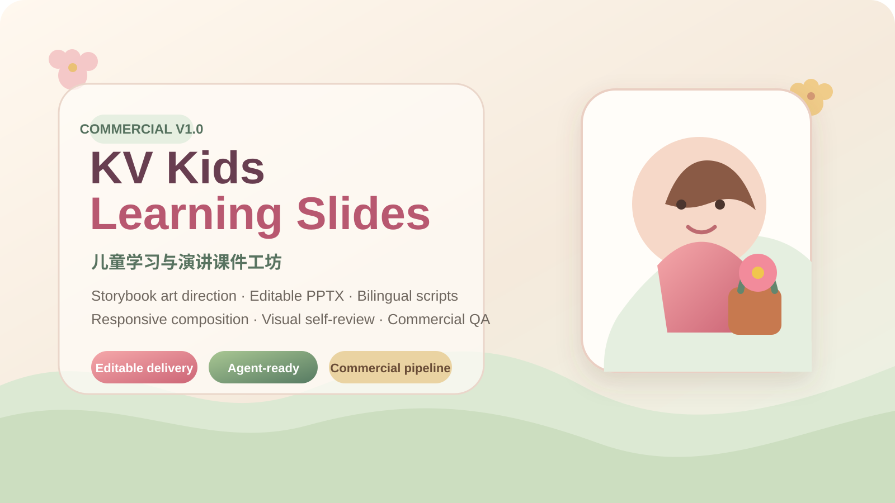
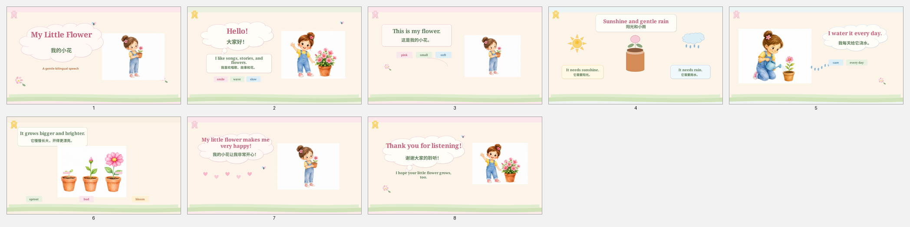

模板感
根据内容和情绪生成多套构图候选，不把所有页面塞进固定左右分栏。
从内容结构、绘本艺术指导、角色连续性，到可编辑 PPTX、双语讲稿和逐页视觉审查，一套 Skill 完成完整商业交付链。

WHY IT EXISTS
根据内容和情绪生成多套构图候选，不把所有页面塞进固定左右分栏。
让主图、字体、气泡、边缘和视觉承托共同构图，区分留白与毛坯。
用艺术方向、稳定角色、字体锁版和商业审美评分建立付费成品感。
CAPABILITIES
定义核心情绪、视觉隐喻、色彩叙事、角色语言和页面节奏。
根据中英文长度、主图数量和故事动作动态选择构图与尺度。
处理字宽、层级、光学居中、双语基线与重点词渲染。
PowerPoint 原生气泡、丝带、标签、天气图标和结构元素。
身份锁与动作资产包保证同一儿童角色贯穿完整故事。
先做对象几何审查，再渲染截图逐页进行视觉复核。
WORKFLOW
年龄、用途、词数、双语模式和交付等级。
核心情绪、视觉符号、角色和色彩叙事。
关键页面至少生成多个真实差异方案。
AI 主插画与原生组件协同，不用整页截图冒充 PPT。
几何审查、渲染复核、商业评分和二次修订。
DELIVERABLES
舞台版不显示教师提示和完整台词；需要排练时，额外生成带动作、记忆和发音提示的 rehearsal_deck.pptx。
Markdown 是讲稿内容母稿，Word 从同一来源编译，避免两套讲稿逐渐失真。
COMMERCIAL SAMPLE

样例用于验证艺术方向、多候选构图、稳定角色、字体系统与商业质量门。正式项目可根据用户主题切换画风和内容结构。
PRIVATE COMMERCIAL R&D
下一阶段将完善公开展示策略、授权边界、产品定价和更多类型回归样例。